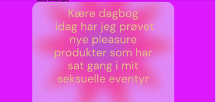
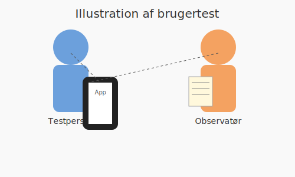

Mit eget HTML og CSS – via FileZilla omkring valgfrit emne Som et kreativt udgangspunkt valgte jeg at designe en hjemmeside for en fiktiv kaffe- og vinbar placeret ved stemningsfulde Enghaveplads i København V. Projektet blev kodet fra bunden i HTML og CSS og uploadet via FileZilla, hvilket gav mig konkret erfaring med at arbejde med både lokal udvikling og online publicering. Jeg har blandt andet lært at indsætte favicon og benytte moderne billedformater som SVG og WEBP for at sikre skarpe og hurtige billeder. Designmæssigt har jeg arbejdet med Grid og Columns for at skabe en struktureret og indbydende side – og brugt margin og padding til at give luft, rytme og balance. Farver og typografi blev valgt med øje for både stemning og læsbarhed, og jeg har haft fokus på farvekontrast og farvebelægning for at sikre tilgængelighed og æstetik i samspil. Derudover har jeg arbejdet med UX-UI principper og skabt en visuel identitet, der rammer barens urbane og hyggelige vibe. Med udgangspunkt i Jakob Nielsens 10 usability heuristikker har jeg haft særligt fokus på princippet om fleksibilitet og effektivitet: Siden skal fungere for både nybegyndere og erfarne brugere. Derfor har jeg tænkt i genveje og smartere funktioner, der giver fart og tilfredsstillelse for dem, der vil hurtigt frem. Vi arbejdede også i gruppeform med værktøjer som Trello og Scrum-møder til planlægning, og vi udarbejdede sanktionsdokumenter for at sikre fælles forståelse og ansvar. Derudover deltog vi i et virksomhedsbesøg, hvor vi fik indsigt i arbejdsgange og kontakt med branchen. Undervejs præsenterede vi vores idéer i Kecha Pucha-format og arbejdede med Figma til prototyping og visuel test. I Dev Mode fik vi mulighed for at hente specifik kode direkte fra vores Figma-designs, hvilket skabte en gnidningsfri overgang fra idé til implementering. Hver deltager skulle kode minimum én side selvstændigt – og det gav plads til både læring og kreativ udfoldelse. Alt i alt et projekt, der har givet mig en bredere forståelse af både teknisk udvikling og digital design.
Clicker-spil i Kawaii-stil – kodet og illustreret fra bunden I dette projekt designede og udviklede jeg et clicker-spil inspireret af den farverige og charmerende Kawaii-stilart. Alle illustrationer blev skabt fra bunden i Adobe Illustrator for at matche det legende og søde univers, og jeg lagde stor vægt på at skabe en visuel identitet, der både var iøjnefaldende og konsistent. Spillet blev kodet med JavaScript, hvor jeg lærte at arbejde med variabler, events og simple animationer for at skabe en interaktiv og levende brugeroplevelse. Jeg brugte Draw.io til at strukturere spillets flow og logik, hvilket hjalp mig med at visualisere både funktioner og brugerrejse, før jeg kastede mig ud i kodningen med HTML og CSS. Projektet gav mig ikke bare tekniske færdigheder – det trænede mig også i at tænke visuelt, kreativt og brugervenligt på én gang. Programmer brugt: Draw.io Adobe illustrator 2025 Visual Code Studio Javascript
introduktionsvideo og tema 1: Tema ord Hygge. En kort introduktion til klassen, lærene, og gruppesamarbejde.
Lære hinanden at kende, (Ryste sammen øvelse). Tema ord Hygge Introduktion til video/edits, gruppesamarbejde og se folk fra klassen.
Mit eget HTML og CSS – via FileZilla omkring valgfrit emne I dette projekt har jeg arbejdet med at designe og udvikle min egen hjemmeside fra bunden ved hjælp af HTML og CSS. Upload og filhåndtering foregik via FileZilla, hvilket gav mig praktisk erfaring med at overføre filer til en webserver og sikre, at alt fungerede korrekt online. Emnet for hjemmesiden valgte jeg selv, hvilket gav mig mulighed for at kombinere tekniske færdigheder med kreativ frihed. Jeg lærte at integrere et favicon, og jeg eksperimenterede med moderne billedformater som SVG og WEBP, som bidrager til både performance og visuel kvalitet. I forhold til layout har jeg arbejdet med CSS Grid og Columns for at strukturere siden effektivt. Jeg har brugt margin og padding bevidst til at skabe luft og visuel balance i indholdet. Derudover har jeg haft fokus på æstetik og brugervenlighed ved at arbejde med farver og skrifttyper – ikke kun for at skabe et flot udtryk, men også for at sikre god læsbarhed. Jeg har undersøgt og anvendt principper for farvekontrast og farvebelægning for at gøre indholdet tilgængeligt for alle brugere. Endelig har jeg også inddraget Gestaltloven for at forstå og anvende designprincipper som nærhed, lighed og hierarki, hvilket har hjulpet mig med at skabe en mere intuitiv og harmonisk brugeroplevelse.
Vi lærte at HTML bruges til strukturen i dit site hvorimod CSS bruges til at style og ændre på egenskaberne i din kode. - Adfærden ændres i HTML ved brug af CSS - mobile site læring af grids. - brug af html og css. Læringsområder i dette Tema: Læring omkring Idegenering/Brainstorm man skulle finde eget emne og målgruppe: Læring i Burger menu (kodning) Fonts Favicon Grid og columns HTML bruges til at opbygge strukturen på dit website, mens CSS anvendes til at style elementerne og ændre deres udseende og egenskaber. Med HTML skaber du selve skeletstrukturen for dit site – såsom overskrifter, afsnit, billeder og links – og CSS bruges derefter til at tilføre farver, afstande, skrifttyper og placering. Ved at bruge CSS kan du ændre adfærden og præsentationen af HTML-elementerne, hvilket gør det muligt at skabe en mere dynamisk og responsiv oplevelse for brugeren. Adfærden ændres i HTML ved brug af CSS – særligt i forhold til mobile visninger, hvor brugen af grids er central. I arbejdet med mobile sites lærer man blandt andet at bruge CSS Grid og kolonneopdelinger til at skabe fleksible layouts, der tilpasser sig forskellige skærmstørrelser. Det giver en dybere forståelse af, hvordan struktur og design hænger tæt sammen. Brug af HTML og CSS er fundamentet for webudvikling. I dette tema arbejder man med konkrete læringsområder, hvor HTML og CSS kombineres for at skabe funktionelle og æstetiske løsninger. Læringsområder i dette tema: Idegenerering / Brainstorm: I begyndelsen skulle man selv finde frem til et emne og definere en målgruppe. Dette gav mulighed for at arbejde kreativt og målrettet med indhold og design. Burger-menu (kodning): Her lærte man at implementere en burger-menu – et vigtigt element i mobilvenlige hjemmesider – både i HTML-struktur og med styling og interaktion via CSS. Fonts: Valg og anvendelse af skrifttyper har stor betydning for brugeroplevelsen. Man arbejdede med at finde passende fonts, der passer til sit emne og målgruppe. Favicon: Oprettelse og indsættelse af et favicon – det lille ikon der vises i browserfanen – var en del af det visuelle udtryk, som gør siden mere professionel. Grid og columns: Ved at bruge CSS Grid og kolonneopdeling lærte man at strukturere indholdet på siden på en overskuelig og responsiv måde.
✅ Brugertests og evalueringer – 1. semester Multimediedesign Når vi designer digitale løsninger, er det afgørende at teste med rigtige brugere. Her er fem metoder, du bør kende – hver med sit formål og særlige styrker: 1. 🎯 5-sekunders testen – Førstehåndsindtrykket tæller Formål: At finde ud af, om budskabet eller designets formål hurtigt bliver forstået. Sådan gør du: Vis dit design i blot 5 sekunder. Stil derefter spørgsmål som: Hvad tror du siden handler om? Hvad fangede din opmærksomhed først? Typisk brugt til: Landing pages og visuelle kampagner, hvor det første indtryk er altafgørende. 2. 🧠 Think-Aloud test – Ind i brugerens hoved Formål: At få indsigt i, hvordan brugeren tænker og navigerer undervejs. Sådan gør du: Lad brugeren udføre specifikke opgaver, mens de sætter ord på deres tanker. Hvad overvejer de? Hvor opstår der tvivl? Velegnet til: Websites, prototyper og test af brugerflow – særligt nyttigt til at opdage skjulte brugervenlighedsproblemer. 3. 🧪 Brugervenlighedstest – Kan brugeren finde vej? Formål: At undersøge, om brugeren kan løse opgaver nemt, hurtigt og uden fejl. Sådan gør du: Giv brugeren opgaver (f.eks. “Find kontaktoplysninger”). Observer deres handlinger, fejl og hvor lang tid det tager. Kan kombineres med: Think-Aloud, observation og måling af klik eller tid. 4. 📊 Survey / spørgeskema – Hurtig feedback i stor skala Formål: At samle feedback fra mange brugere på kort tid. Sådan gør du: Brug digitale værktøjer som Google Forms eller SurveyMonkey. Kombinér lukkede spørgsmål (f.eks. 1-5 skala) med åbne svarmuligheder for dybere indsigt. Bruges til: Målgruppeanalyse, evaluering efter tests og generel brugerfeedback. 5. 🧭 Heuristisk evaluering – Eksperternes lynanalyse Formål: At lade eksperter vurdere et design ud fra velkendte usability-principper. Sådan gør du: Gennemgå designet med fokus på Jakob Nielsen’s 10 heuristikker – som fx: Konsistens i designet Forebyggelse af fejl Brugerens kontrol og frihed Bruges til: Hurtig og systematisk vurdering af brugergrænseflader – uden at inddrage slutbrugeren direkte.
